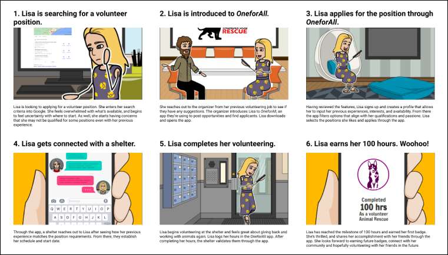

OneForAll Volunteering is a volunteering app concept centred around connecting users directly with organizations and charities in their local area, and providing an easy method of applying to positions while gamifying volunteering to encourage adherence and commitment.
This was a group project completed over three weeks by Michael Tran, Jeehyun Lee, Samantha Chong-Luke and Syed Haider as part of the University of Toronto SCS UX/UI Boot Camp program.
While there are a vast number of mobile apps that are currently available on the market, there are certain areas where needs have yet to be fully addressed. One of these needs is in the volunteering space. While current volunteer apps provide some access to opportunities, users may find difficulty finding opportunities that appeal to them, or may not adequately describe the availability and requirements necessary.
How might we design a mobile app that not only allowed users to easily find positions they were interested in, but also kept them invested in assisting their community?
We employed the design thinking process to structure our flow and guide our process.

Our first step to undergoing this project was to get an understanding of potential users and a rough idea of what they would want in a novel volunteering app. Because this was an area that most of the team wasn’t familiar with, we began by creating a proto-persona that could provide some description of target user goals and needs. While these were based on assumptions, it was crucial to get the gears turning and allow us to formulate questions for the Define phase of our design process.

We believe that providing a product that acts as a central hub for aggregating volunteer opportunities for active and prospective volunteers will achieve greater levels of community involvement. We will know this is true when we see increased numbers of volunteers, and positive engagement with charitable organizations.
Project Goals:The primary goal of our research was to find out what draws people to volunteer, how they choose to volunteer, and what would engage them to volunteer more within their community. As well, we wanted to determine what incentives would increase volunteering for those that normally do not volunteer.
During the Define phase, we planned and conducted 7 1:1 interviews to collect qualitative data with potential users in Toronto. In addition, 22 individuals participated in an online survey conducted through Google Forms to collect quantitative data.

From those interviews and surveys, we were able to gather a number of insights, which were placed into an affinity diagram to help identify common trends that users had when it came to the goals and objectives we based our interview questions on. This information was also used to produce an empathy map, which allowed us to add emotions to the data. By doing so, we were able to elaborate on our proto-persona to develop it into a full-fledged user persona.

In the case of Lisa, she’s a young professional that is looking to give back to the community. She’s also excited to expand her social network through volunteering, by finding friends with similar interests. However, she’s limited to searching for organizations that are close to her area, and she’s worried that based on her previous volunteering and work, it’ll be difficult for her to find openings that match her experience and causes. In addition, with how competitive certain positions are, she’s worried that she’ll never find an opening before it gets filled. For Lisa, the ideal solution would be having an app that provides alerts for positions she’s interested in, while also informing her of what positions she’s qualified which align with her causes and passions.
Using our persona to anchor the Ideation phase of our design process, we were able to arrive at the following user insight statement:
“A user with a busy schedule who’s passionate about charitable causes needs a mobile platform to help them coordinate with organizations on available volunteering placements that align with their beliefs, because they want to find opportunities to give back and contribute to a cause they care about within their community.”
We also arrived at the following problem statement:
“We believe that creating a mobile platform that filters and presents volunteer positions for individuals looking for opportunities that fit within their beliefs, qualifications, and schedule will achieve an increase in community engagement, networking, and growth.”
By developing these statements, and using the insights and persona that were developed through user interviews, we were able to explore different ideas using the “I wish, I think, What If” method. This, alongside a competitor analysis, helped generate a wide variety of potential features that our product could have. We then narrowed these ideas down using a feature prioritization matrix to determine which features would be the highlights of our design.

Once we had a clear understanding of which features our product would contain, the next step was to outline a potential user scenario in which our persona, Lisa, would require our product, and how she would use it to achieve her goals and needs. In addition, a storyboard was created based off the user scenario to provide a visual representation and illicit a greater connection.
Leveraging the storyboard, a user journey map was also created to provide an emotional aspect to the user scenario. The journey map provided insight not only into how our persona would feel, but also some of the difficulties they could face and pain points they came across. By doing so, we were able to gain insight into areas that our product could then address.

Following a competitor analysis, the team worked on an initial user flow to outline the steps a user would go through when onboarding with OneForAll, as well as how key features selected via the feature prioritization matrix would work. Our aim was to create flows that would streamline the overall application process. Although profile creation was a step that we wanted users to complete, we gave users the option to experiment with the app and only be forced to create an account if they attempted to apply for a position.

Once user flows were finished, each member took some time to come up with paper prototypes using the wireframes as a guide; we then reconvened to discuss and vote on which designs would best fit our objectives. This process, while not lengthy in time, was very valuable as it allowed us to brainstorm a number of potential solutions, while also letting us focus on how to solve users’ problems without thinking deeply about the visual design aspects.


Using these low fidelity designs, we could then create medium fidelity designs of our app on Figma, as well as begin prototyping in earnest.

Although we were happy with our initial designs, we knew that there were opportunities for improvement. In order to ensure that our prototype was functional and that users could easily navigate through the design, we tested seven participants over two iterations.
Our user testing plan’s primary objectives were to evaluate the sign-up page, the profile completion, as well as the search and apply feature. We also wanted to explore any other pain points testers came across, as that information would be vital to improving our design.

Once we gathered insights from our usability testing, we sorted them based on frequency of responses and then categorized them in an affinity diagram to easily identify the underlying issues of our design. We looked at the feedback that appeared most frequently as the major issues, with the majority of the less frequent comments being addressed if time permitted.

By analyzing our user testing feedback and aligning on what were the top changes needed, we were then able to work on a second iteration of our designs.
In one example, users felt that while the Login / Sign-up page we started with was visually pleasing, it was overwhelming to have so many interactive elements on one layout.
We worked to break up the steps into smaller components that would be easier to digest, and minimize what was on one screen at a given time.

Our search feature was updated to make the page more minimalistic. Icons and filter elements were also adjusted to be more visible and to be better understood.
In addition, we increased the fidelity of our prototype by incorporating additional streams for case scenarios.